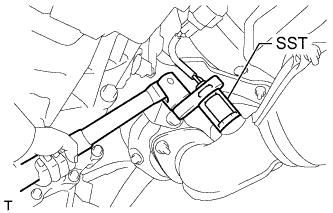
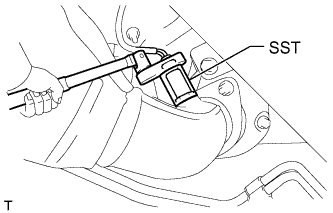

ВЫПУСКНАЯ ТРУБА > СНЯТИЕ |
| 1. СНИМИТЕ ВЫХЛОПНУЮ ТРУБУ В СБОРЕ |
Выверните 2 болта и отсоедините выхлопную трубу от опоры выпускной трубы.
Снимите прокладку и опору выпускной трубы.
| 2. СНИМИТЕ ЦЕНТРАЛЬНУЮ ВЫПУСКНУЮ ТРУБУ В СБОРЕ |
Выверните 2 болта и снимите 2 пружины сжатия, затем отсоедините центральную выпускную трубу от 3 опор выпускной трубы.
Снимите прокладку.
| 3. СНИМИТЕ ПЕРЕДНЮЮ ВЫПУСКНУЮ ТРУБУ В СБОРЕ |
Отсоедините разъем подогреваемого кислородного датчика.
Отверните 2 гайки и снимите приемную трубу.
Снимите прокладку.
| 4. СНИМИТЕ КРОНШТЕЙН ОГРАНИЧИТЕЛЯ ВЫПУСКНОЙ ТРУБЫ |
Выверните 2 болта и снимите кронштейн ограничителя.
| 5. СНИМИТЕ ПРИЕМНУЮ ТРУБУ № 2 В СБОРЕ |
Отсоедините разъем подогреваемого кислородного датчика.
Отверните 2 гайки и снимите приемную трубу.
Снимите прокладку.
| 6. СНИМИТЕ ПОДОГРЕВАЕМЫЙ КИСЛОРОДНЫЙ ДАТЧИК (датчик 2 ряда 1) |
Отсоедините разъем датчика.
|  |
С помощью SST снимите датчик.
| 7. СНИМИТЕ ПОДОГРЕВАЕМЫЙ КИСЛОРОДНЫЙ ДАТЧИК (датчик 2 ряда 2) |
|  |
С помощью SST снимите датчик.